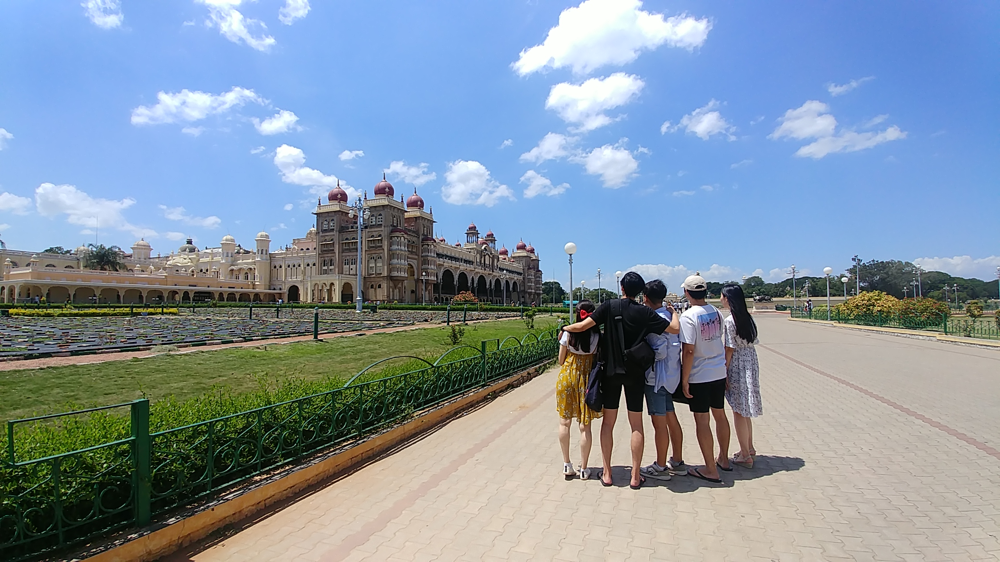

20기
20기

김동진
설레는 마음을 가지고 한국을 떠난지 어느덧 11개월이라는 시간이 지나 12월이 되었습니다.
처음에는 갈까 말까 고민도 많이 했었던 것 같은데, 지금은 오길 잘했구나 라는 생각만 가지고있게 되었습니다.
다른 무엇보다도 새로운 문화를 많이 접할 수 있다는 것이 아주 좋았습니다.
물론 한국과 달라 불편한 점도 많이 있지만, 지금 생각하니 그 또한 경험이었구나 생각이듭니다.
인도 교수님들과의 수업들도 색다른 경험입니다. 영어로 모든 수업을 듣고 이것저것 실습해보다보면
어느새인가 교수님들과 농담까지 하고있는 저를 발견할 수 있었습니다.
인도여행도 무척 즐겁습니다. 인도여행을 하다보면 우리가 인도를 관광하는건지 인도인들이 우리를 관광하는 것인지
의아한 경우도 있지만 인도의 문화재들도 무척이나 아름답습니다. 하지만 역시 사기는 많이 조심해야합니다.
저는 인턴쉽기간동안 Healthcare Technology Innovation Centre라는 곳에서 일했습니다.
Windows기반의 어플리케이션을 Linux 기반과 Android 기반으로 크로스 플랫폼하는 일을 하였습니다.
쉽게 할 수 없는 경험이었고 재미있는 경험이었습니다.
많은 인도인 친구들도 만나고 인도밥도 많이 먹었습니다. 사모사와 플레인 도사는 잊지 못할 것입니다.
이제 돌아갈날이 얼마 안남으니 막상 아쉽기도 하지만 그래도 한국에 돌아가고 싶기는 합니다.
인도에 첸나이 지역에서는 돼지고기를 구하기 힘들어 한국가면 꼭 삼겹살에 김치를 싸서 먹을 것입니다.
끝으로 인도창을 고민하는 친구들이 이 글을 본다면 긍정적인 생각을 가졌으면 좋겠습니다.